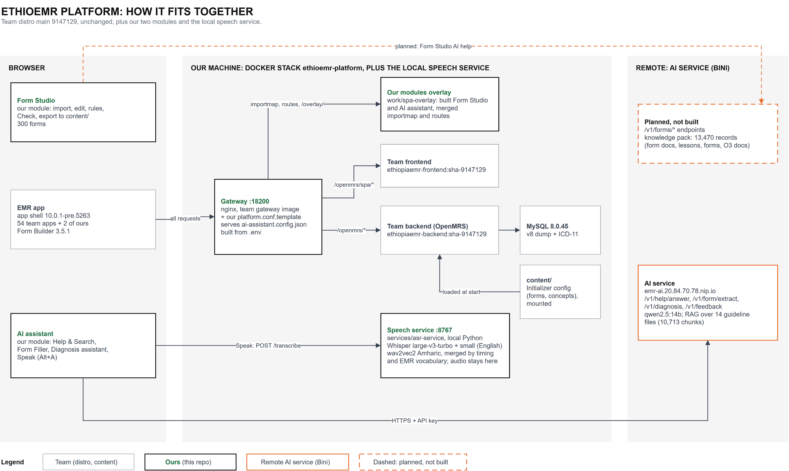

How the platform is put together, run, tested and changed
v0.1, a draft for engineers and maintainers. Every number in it was read from the repository or measured on the development laptop on 22 October 2026. Nothing here is reviewed or merged yet. Items that belong to other owners (the distro team, the content team, the AI service owner) are marked as theirs and left open. It is written for engineers who start, change or review the platform; clinicians and form builders use the EthioEMR User Manual.
.env)The platform is the team's EthioEMR (OpenMRS 3, TenaEHR) exactly as it is on GitHub main, plus the modules built
on top of it that are not in the published images yet. distro/ is a byte-for-byte copy of
palladium-group/ethiopiaemr-distro-referenceapplication at commit 9147129. Everything specific to the
platform lives in one overlay compose file, the gateway template and modules/.
| Part | What it does | Source |
|---|---|---|
| Form Studio | Build, check and export forms. Never writes to a live EMR. | modules/esm-form-studio-app |
| AI assistant | Help & Search, Form Filler, Diagnosis Assistant and the Speak input, inside the patient chart. | modules/esm-ai-assistant-app/dist (built bundle only) |
| Speech service | Local Amharic and English speech-to-text for Speak. Audio stays on the machine. | services/asr-service |
| Demo-video tooling | Scripted, narrated product videos. | tools/demo-video |
| Item | Value |
|---|---|
| App | http://localhost:18200/openmrs/spa (user admin, password Admin123, location Main Pharmacy) |
| MySQL | localhost:3320 (user openmrs, password openmrs) |
| App shell | 10.0.1-pre.5263 (pinned by the team), Form Builder 3.5.1 |
| Frontend apps | 56 in the live importmap.json (22 Oct): 54 team apps and 2 overlay modules. |
| Images | meronmen/ethiopiaemr-frontend:sha-9147129, meronmen/ethiopiaemr-backend:sha-9147129, mysql:8.0.45, gateway built from distro/gateway |
Synthetic test data only. Never enter real patient information on this platform.
One gateway on port 18200 decides where each browser request goes. The team's frontend and backend images are used unchanged; the platform adds a module overlay, an AI configuration file and a local speech service.

docs/platform/architecture.drawio. Black boxes are this repository, grey boxes the team's distro and content, orange the remote AI service, dashed boxes planned work.The gateway is the team's nginx image with gateway/platform.conf.template mounted in place of its default template.
| Path | Served from |
|---|---|
/openmrs/spa/importmap.json, /openmrs/spa/routes.registry.json | work/spa-overlay/: the team's app list and routes merged with this repo's modules. Never cached. |
/openmrs/spa/overlay/<module>/ | work/spa-overlay/modules/: the built Form Studio and AI assistant files. |
/openmrs/spa/ai-assistant.config.json | Generated by nginx from .env at container start (section 8). |
/openmrs/spa/config/ | The frontend's /config/ (logos, icons, translations). |
/openmrs/spa/* | The team frontend container, full path passed through. |
/openmrs/* | The team backend (OpenMRS), which reads the MySQL database and the Initializer content in content/. |
The browser calls two services directly: the remote AI service (https://emr-ai.20.84.70.78.nip.io) and the local
speech service (http://localhost:8767). The gateway's Content-Security-Policy allows both through
AI_CONNECT_SRC.
distro/ and content/ are copies of other teams' repositories. Do not edit them here: fix things upstream,
then refresh the copy.
| Path | What it is | Owner |
|---|---|---|
distro/ | Team distro, unchanged. Refresh with a git archive of a newer main and update PLATFORM_IMAGE_TAG. | Distro team |
content/ | Initializer content snapshot (ethiopiaemr-openmrs-content). Changes go to that repository through a PR. | Content team |
docker-compose.platform.yml, gateway/, platform.ps1, scripts/, tools/build-spa-overlay.py | The platform overlay. | This repo |
modules/<name>/module.json | Where each extra module's build comes from. | This repo |
modules/esm-form-studio-app/ | Form Studio source (migrated 2026-10-22). Its dist/ is git-ignored. | This repo |
modules/esm-ai-assistant-app/dist | AI assistant built bundle 0.1.0. No source here; kept until Bini publishes the package. | Bini (AI service owner) |
services/asr-service/ | Local speech-to-text. | This repo |
tools/demo-video/ | Demo-video pipeline. Set EMR_URL to target another EMR. | This repo |
database/initial-db/ | Database dump, not versioned (scripts/get-initial-db.ps1). | Local only |
database/snapshots/, work/ | Snapshots and build output. Git-ignored. | Local only |
Windows, PowerShell, from the repository root. platform.ps1 is the one entry point; it wraps
docker compose --project-directory . -f distro/docker-compose.yml -f docker-compose.platform.yml.
copy .env.example .env, then set AI_SERVICE_API_KEY (ask the AI service owner). platform.ps1 creates .env from the example if it is missing..\platform.ps1 up starts the stack. See the timings below..\scripts\build-form-studio.ps1 makes the production build of Form Studio..\platform.ps1 overlay adds Form Studio and the AI assistant to the app. Refresh the browser.services\asr-service\start-asr.ps1 starts the speech service for Speak, in its own window.| Command | What it does |
|---|---|
up | Starts the stack. On an empty install with a snapshot present it restores the snapshot first. Without a snapshot or a dump it runs scripts/get-initial-db.ps1. |
overlay | Runs tools/build-spa-overlay.py and restarts the gateway. Run after start and after any module rebuild. |
status | Containers and health (docker compose ps). |
logs [service] | Follows the logs of one service or all. |
stop | Stops the containers and keeps data. |
down | Removes the containers and keeps the data volumes. |
config | Prints the merged compose file. Must succeed before a PR. |
content-pass | Fresh install only, after the first start: clears the Initializer checksums and restarts the backend for a second content pass. |
snapshot | Stops backend and db, saves the two data volumes to database/snapshots/, starts them again. |
Measured on 2026-10-22.
| Start | Time | Why |
|---|---|---|
Normal restart (stop then up) | about 3.5 min | Data is kept in the Docker volumes. |
Fresh install with a snapshot in database/snapshots/ | about 6 min | up restores the loaded database and OpenMRS data. |
| Fresh install without a snapshot | about 1.5 h | Database import, search index over about 81,000 concepts, all content, then content-pass. |
.\platform.ps1 content-pass..\platform.ps1 snapshot. It writes mysql-data.tgz and openmrs-data.tgz (about 900 MB together, git-ignored) and restarts backend and db (2 to 3 min).database/snapshots/ to teammates. On their empty install, up finds both files and restores them before starting.The Initializer saves checksums even for content files that failed, and some files refer to concepts defined in later
files. content-pass deletes /openmrs/data/configuration_checksums and restarts the backend so every file
is processed again. Afterwards check:
docker logs ethioemr-platform-backend-1 2>&1 | Select-String 'was processed and [0-9]+ out of'The expected result is no lines. Today about 19 files still appear (section 12).
The platform's ports are chosen not to clash with the other local stacks.
| Port | Used by |
|---|---|
18200 | This platform: gateway, app at /openmrs/spa (PLATFORM_HTTP_PORT). |
3320 | This platform: MySQL (PLATFORM_DB_PORT). |
8767 | Speech service on 127.0.0.1 (ASR_PORT). |
18090 and 3309 | AI quick start (not this platform). |
18100 | Form Studio's former workspace (not this platform). |
18080 and 3308 | The distro clone (not this platform). |
.env).env is git-ignored. docker compose reads it from the repository root. Add every new setting to
.env.example with an empty or safe value.
| Key | Value in .env.example | What it controls |
|---|---|---|
PLATFORM_IMAGE_NS | meronmen | Docker namespace of the team images. |
PLATFORM_IMAGE_TAG | sha-9147129 | Image tag; matches the commit of distro/. |
PLATFORM_HTTP_PORT | 18200 | Gateway port on the host. |
PLATFORM_DB_PORT | 3320 | MySQL port on the host. |
AI_SERVICE_URL | https://emr-ai.20.84.70.78.nip.io | AI service address given to the browser. |
AI_SERVICE_API_KEY | (empty) | API key given to the browser. Ask the AI service owner. |
ASR_SERVICE_URL | http://localhost:8767 | Speech service address given to the browser. |
AI_CONNECT_SRC | AI service, http://localhost:8767, http://127.0.0.1:8767 | Extra addresses allowed in the CSP connect-src. |
SHR_PULL_PASSWORD | (empty) | Optional SHR pull account password (team compose). Leave empty locally. |
What docker-compose.platform.yml changes on top of the team compose file, and why:
| Service | Change |
|---|---|
| project | Own compose project ethioemr-platform: containers, volumes and network never touch another stack. |
| gateway | Built from distro/gateway; platform.conf.template and work/spa-overlay mounted; AI and speech variables passed in; port 18200:80. |
| frontend, backend | Team images pinned to the distro/ commit, not latest. The backend reads ./content/configuration/backend_configuration. |
| db | MySQL 8.0.45, because the v8 dump does not load on 8.0.46. Initialised from database/initial-db/. |
The published frontend image does not contain Form Studio or the AI assistant. Until each is published to npm and listed
in the distro, tools/build-spa-overlay.py adds them:
importmap.json and routes.registry.json.modules/<name>/module.json it copies the built files to work/spa-overlay/modules/<name>/ (source maps skipped unless --keep-maps)../overlay/<name>/<entry>, and adds the module's routes.json to the route registry. App shell 10.x keeps routes under a top-level routes object; the script handles both layouts.Cache-Control: no-store, so a rebuild shows on refresh.module.json key | Meaning |
|---|---|
package | npm package name, for example @palladium-ethiopia/esm-form-studio-app. |
dist | Folder with the build: relative path, absolute path, or $ENV_VAR. |
entry | Entry file. Optional; defaults to <scope>-<name>.js. |
routes.json, or the script stops with "no routes.json".modules/<name>/module.json with package, dist and entry. Copy one of the two existing files..\platform.ps1 overlay and refresh the browser. Check that the browser console has no new errors.The team's long-term route is to publish the module to npm and add one line to
distro/frontend/spa-assemble-config.json in the distro repository. After that the overlay is no longer needed for it.
The AI assistant needs three values in the browser: the AI service address, its API key and the speech service
address. They come from .env, so the key is not stored in any repository or image.
nginx answers /openmrs/spa/ai-assistant.config.json itself. The template fills it from the gateway's environment
when the container starts:
{"@palladium-ethiopia/esm-ai-assistant-app":
{"aiServiceUrl":"${AI_SERVICE_URL}","aiServiceApiKey":"${AI_SERVICE_API_KEY}","asrServiceUrl":"${ASR_SERVICE_URL}"}}sub_filter is neededThe app shell loads the config files listed in index.html. The published frontend image fixes that list at build
time, so the SPA_CONFIG_URLS variable in the compose file is ignored. The gateway therefore edits the page as it
passes through:
proxy_set_header Accept-Encoding "";
sub_filter_once on;
sub_filter 'configUrls: [' 'configUrls: ["/openmrs/spa/ai-assistant.config.json", ';| Detail | Reason |
|---|---|
| Placed first in the list | Later files win. The AI file sets only the assistant's own keys, so the team's files keep the last word. |
Accept-Encoding "" | sub_filter can only edit an uncompressed response, so the gateway asks the frontend for one. |
CSP connect-src | The browser may call only the addresses in AI_CONNECT_SRC besides the EMR itself. |
Check it: http://localhost:18200/openmrs/spa/ai-assistant.config.json returns the three values (the key included,
see section 13).
The Speak button needs speech-to-text, and the EMR images do not include it. services/asr-service is that service,
run locally on 127.0.0.1:8767. Audio never leaves the machine.
| Endpoint | Behaviour |
|---|---|
GET /health | {"status":"ok","model":"..."}. The assistant then shows "Speech service ok" with the model name. |
POST /transcribe | Form with audio (WAV) and lang (en or am). Returns text, model, processing_time; for Amharic also what each engine heard and english_words_used. |
.\start-asr.ps1 in services/asr-service. The first run creates .venv and installs about 3 GB of Python
packages; the models (about 3.5 GB) download into the shared Hugging Face cache on first use. Leave the window open.
After the platform's first start, rebuild the medical vocabulary from the EMR database with python build-lexicon.py.
In mixed mode (the default) two engines run on the same recording and mix.py merges them word by word,
without an LLM. The Amharic engine hears everything but writes English words in Amharic letters. An English word from
Whisper replaces what the Amharic engine heard at the same moment only if Whisper is reasonably sure, it sounds like the
Amharic engine's word, and it is in the EMR's own vocabulary (lexicon\emr-vocab.txt, about 29,000 words from concept and
drug names). Every output word comes from one of the two engines.
| Setting | Default in server.py and start-asr.ps1 | Meaning |
|---|---|---|
ASR_MODEL | mobiuslabsgmbh/faster-whisper-large-v3-turbo | English Whisper model (lead). |
ASR_CONFIRM_MODEL | small | Second English model that confirms words; empty turns it off. |
ASR_AM_MODE | mixed | mixed or transcribe (Amharic engine only). |
ASR_DEVICE | auto | auto, cuda or cpu. |
ASR_SAVE_DIR | (off) | Saves each recording; -SaveRecordings sets it. |
ASR_PORT | 8767 | Port. |
The Amharic engine is agkphysics/wav2vec2-large-xlsr-53-amharic: 9% character errors on the 15 s test
consultation, 3 s on CPU. Whisper large-v3 alone gave 90% character errors on Amharic and was rejected.
Amharic needs a setting. The assistant's asrLanguage defaults to en. Set it to am in
Implementer Tools; it is stored in the browser only (local storage key openmrs:temporaryConfig).
scripts/build-form-studio.ps1 makes the production build of modules/esm-form-studio-app into its
dist/, where the overlay reads it.
| Command | What it does |
|---|---|
.\scripts\build-form-studio.ps1 | Installs packages if node_modules is missing (--immutable), then builds. |
.\scripts\build-form-studio.ps1 -Check | Runs unit tests, type check and lint first; stops at the first failure. |
| First time, by hand | cd modules\esm-form-studio-app; node .yarn/releases/yarn-4.10.3.cjs install |
The script writes dist\BUILD-INFO.txt with the build time and commit, then prints "Done. Next: .\platform.ps1 overlay".
Yarn 4.10.3 is committed in .yarn/releases, so no global Yarn is needed.
Results below were run on 22 October 2026 against this platform, unless marked otherwise.
| Check | Command (in modules\esm-form-studio-app) | Result |
|---|---|---|
| Unit tests | node .yarn/releases/yarn-4.10.3.cjs test | 100 passed, 6 skipped (106) in 32 files; 143 s. |
| Type check | node .yarn/releases/yarn-4.10.3.cjs typescript | No errors; 32 s. |
| Lint | node .yarn/releases/yarn-4.10.3.cjs lint | No errors; 94 s. |
| End-to-end UI | node node_modules\@playwright\test\cli.js test | 43 passed in 9.8 min: 42 tests and 1 setup step in 11 files, against :18200. |
| Compose file | .\platform.ps1 config (repo root) | Must succeed before a PR. |
| Speech merge | python test-merge.py (in services/asr-service) | Must still show "(no swaps)" on test-audio/consult-am.wav. |
Playwright drives the installed Chrome through Form Studio the way a form builder would. The harness refuses any address
that is not localhost, runs one browser at a time, logs in once, closes the EMR's red "unresolved backend dependencies"
pop-up and accepts "Leave site?" dialogs. The login lives in e2e/.env (copy e2e/example.env; git-ignored).
Reports go to work/e2e-report/.
The test plan's gates G0 to G3 passed (last on 2026-10-20). Specs 05 (editor) and 06 (rules) exist and
passed in the run above, once; gate G4 asks for three runs in a row and has no recorded result yet. Spec
08-check-export (the Check and the download) is not written.
| Gap | Detail | Owner |
|---|---|---|
| Content rows left unsaved | After the content pass about 19 content files still leave rows unsaved, for example queue.csv 18 of 18 and radiology_category_members_concept_set.csv 101 of 232. A separate install on the same images and content shows the identical list, so they come from the content snapshot. | Content team |
| AI bundle built for app shell 9.x | The bundle in modules/esm-ai-assistant-app/dist (0.1.0) was compiled for 9.x; the team runs 10.0.1-pre.5263. On 22 Oct all four features worked on 10.0.1 (see below). It still needs a 10.x build, an npm package and a shared source repository. | Bini |
| AI service certificate | The AI service's TLS certificate is not trusted by browsers. Until a user has accepted the warning once, Form Filler falls back to its rule-based extractor ("AI service not reachable"), observed on 22 Oct as net::ERR_CERT_AUTHORITY_INVALID. | Bini |
| Upload input | Form Filler and Diagnosis Assistant show Upload marked "SOON". It is not available. | Bini |
| Orders not sent to Diagnosis | The Diagnosis Assistant says "Not loaded: orders. The model will not see them." | Bini |
| Form Studio back end | There is no back end yet; Form Studio runs in the browser only. | This repo |
Done on :18200 with the synthetic patient Almaz Bekele and the Central Triage Form, driven by Playwright in Chrome.
| Feature | Request | Result |
|---|---|---|
| Help & Search | POST /v1/help/answer?stream=true: 200 | Answer with 5 numbered sources (4 forms, 1 WHO guideline page); model qwen2.5:14b. |
| Form Filler | POST /v1/form/extract: 200 | 8 values found from a typed note, each with its quoted evidence; Insert accepted (8) filled the form fields. Not saved. |
| Diagnosis Assistant | POST /v1/diagnosis?stream=true: 200 | Three-item differential from 8 chart records, with guideline references and a "Some citations could not be verified" warning. |
| Speak | POST localhost:8767/transcribe: 200 | English (en) and Amharic (am) recordings transcribed from a test WAV file played as the microphone. |
Any user who can open the EMR can read the AI service API key in the browser. The gateway keeps it out of git
and images, but /openmrs/spa/ai-assistant.config.json returns it to every page, like any frontend configuration.
Open items for the AI service owner, most urgent first:
| # | Item | Question |
|---|---|---|
| 1 | Rotate the key | It was distributed in the AI quick-start zip and images. What can a holder of the key do: which endpoints, what rate limit, can it reach endpoints that take patient context? |
| 2 | Canonical address and TLS | Config uses emr-ai.20.84.70.78.nip.io, the integration docs say ai.20.84.70.78.nip.io. Which is canonical, and can it get a trusted certificate? |
| 3 | CORS_ORIGINS | Which origins are allowed? Calls from http://localhost:18200 already succeed, which suggests a wildcard or no origin check. |
| 4 | User identity | X-OpenMRS-User is trusted but not verified. When does the same-origin route /openmrs/ai/ with OpenMRS session validation arrive? It removes the key from browsers. |
| 5 | Patient data handling | Are prompts, chart records or answers logged? Where, for how long, and who can read them? |
| 6 | Frontend on shell 10.x | Rebuild against 10.0.1-pre.5263 with peer 10.x, publish @palladium-ethiopia/esm-ai-assistant-app to npm, share the source repository. |
Other rules: secrets (.env, keys) never go into git; the platform holds synthetic test data only; the speech
service listens on 127.0.0.1 only and keeps audio on the machine; recordings saved with -SaveRecordings must be test
dictations only.
From CONTRIBUTING.md, following the team distro.
| Topic | Rule |
|---|---|
| Branches | main is the integration branch; never commit to it. Branch from it with feat/, fix/, chore/ or docs/. One topic per branch and per PR. |
| Merges | PRs are merged with a merge commit ("Merge pull request #N from ..."). |
| Commits | Conventional Commits: feat: ..., fix(gateway): ..., chore: pin distro to sha-9147129. Imperative, present tense, about what changes and why. |
| Other teams' code | distro/ and content/ are copies. Fix upstream, then refresh. |
| Before a PR | .\platform.ps1 config succeeds; after overlay or module changes, the browser console is free of new errors; after speech changes, test-merge.py shows "(no swaps)"; the PR says where a reviewer can see anything new. |
| What | Code | Where to look | How to verify |
|---|---|---|---|
| Platform stack | docker-compose.platform.yml, gateway/, platform.ps1 | http://localhost:18200/openmrs/spa | .\platform.ps1 status shows 4 containers (gateway, frontend, backend, db). |
| Overlay | tools/build-spa-overlay.py, modules/*/module.json | /openmrs/spa/importmap.json | Lists both @palladium-ethiopia modules with paths under ./overlay/. |
| Form Studio | modules/esm-form-studio-app | /openmrs/spa/form-studio | The start page lists the forms; build-form-studio.ps1 -Check passes. |
| AI assistant | modules/esm-ai-assistant-app/dist | Any patient chart, Alt+A | Help & Search answers with sources. |
| Speech service | services/asr-service | http://localhost:8767/health | Returns "status":"ok". |
| These manuals | docs/platform/src/ | docs/platform/*.pdf | node docs/platform/src/build-pdfs.mjs rebuilds both. |